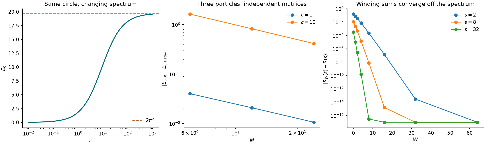

Archived preliminary calculations · one dimension
Current research: exact net trace identities in bounded planar rectangles. These circle calculations did not test nontrivial planar net geometry.
From closed geodesics
to interacting worldlines
Can a weighted network of geodesic segments replace a many-body eigenvalue calculation? Start with a circle, keep the interaction and exchange data, and demand an independent numerical comparison at every step.
The first results are exact free-particle trace identities, an interacting two-particle winding determinant, and a smaller collision-channel calculation for three particles. A general stationary-net trace formula and a general computational advantage remain open.
01 / Scope and conventions
Choose a model that can falsify the idea
Let the base manifold be the circle \(S^1_L=\mathbb R/L\mathbb Z\). For spinless bosons with repulsive contact interactions, use the Lieb–Liniger Hamiltonian
All numerical experiments set \(L=1\). The contact operator is defined by its quadratic form on symmetric periodic \(H^1\) functions; it is not a grid-dependent finite barrier. Fermions appear only in the free baseline. The central observable is the heat trace \(Z_N(\beta)=\operatorname{Tr}e^{-\beta H_N}\), or a resolvent trace difference. Knowing the heat trace for every \(\beta>0\) determines the discrete spectrum with multiplicities, although inversion from noisy finite data is difficult.
These are established models and identities, reconstructed here as a reproducible foundation. Lieb and Liniger’s original solution supplies an exact spectral benchmark. A many-particle Berry–Tabor trace formula by Urbina, Kelly, and Richter already treats this model. The possible contribution of this project is a controlled collision-network computation and its extension beyond integrability; no novelty claim is made for the circle solution.
02 / Simplest exact test
Free particles give exchange cycles
For any compact base manifold with one-particle heat trace \(K(t)=\operatorname{Tr}e^{t\Delta}\), the free boson and fermion traces are
with the upper sign for bosons. In particular,
Proof
Project the tensor-product heat operator with \(P_\pm=(N!)^{-1}\sum_{\sigma\in S_N}\chi_\pm(\sigma)U_\sigma\). Integrating the heat kernels around a permutation cycle of length \(\ell\) yields \(K(\ell\beta)\), by the semigroup identity. A permutation with \(m_\ell\) such cycles has class size \(N!/\prod_\ell(\ell^{m_\ell}m_\ell!)\) and sign \(\prod_\ell(-1)^{(\ell-1)m_\ell}\). Substitution gives the formula.
On the circle, Poisson summation turns every cycle factor into an exact geodesic winding sum:
Thus the free theory has a genuine spectral/geometric equality. The geometric side is a collection of exchange loops, including the contractible sector. Connected collision nets first enter with interactions. On a general curved manifold the cycle identity stays exact, while replacing each heat kernel by a geodesic approximation requires additional analysis.
03 / Add one interaction
Two particles: an exact winding determinant
Separate center of mass and relative position: \(R=(x_1+x_2)/2\), \(r=x_1-x_2\). In a total momentum sector \(P=2\pi n/L\), write \(\Psi=e^{iPR}\phi(r)\). Bosonic symmetry makes \(\phi\) even and periodicity gives \(\phi(r+L)=(-1)^n\phi(r)\). The relative Hamiltonian is \(h_c=-2\partial_r^2+2c\delta_L(r)\) with that twist.
Put \(a=L/2\), \(p=n\bmod2\). On \([0,a]\), the contact condition is \(\phi'(0)=(c/2)\phi(0)\). At the other endpoint impose Neumann conditions for \(p=0\), Dirichlet for \(p=1\). The energies are
For \(c>0\), there is one root in each interval \((j\pi/a,(j+1/2)\pi/a)\) for even sectors and \(((j+1/2)\pi/a,(j+1)\pi/a)\) for odd sectors, with \(j\geq0\).
Proof and monotonicity
Integrating the relative equation across the contact gives \(\phi'(0^+)-\phi'(0^-)=c\phi(0)\); evenness halves the jump. The far endpoint conditions follow from evenness and the twist. Solutions proportional to \(\cos(q(a-r))\) or \(\sin(q(a-r))\) give the equations. In each stated interval, the corresponding left side increases strictly from zero to infinity, giving existence and uniqueness. Every eigenvalue increases strictly with \(c\), also following from the contact quadratic form and the nonzero contact value of each eigenfunction.
For \(s=2\kappa^2>0\), let the free contact Green function in parity sector \(p\) be
The relative perturbation determinant and resolvent trace difference satisfy
This is an exact sum over relative-circle windings, with a contact weight. After meromorphic continuation, its zeros away from free poles give the sector eigenvalues. It is a symmetry-reduced correspondence, not yet an enumeration of arbitrary nets on the base manifold.
Proof and convergence
The line Green kernel of \(-2\partial_r^2+s\) is \(e^{-\kappa|r-r'|}/(4\kappa)\). Summing its translated images with twist \((-1)^{pw}\) gives the contact Green function. Only the even modes have nonzero value at the contact, so this diagonal kernel is also the one for the bosonic relative subspace. The rank-one resolvent formula gives
Since \(G_p'(s)=-\langle0|(h_0+s)^{-2}|0\rangle\), tracing proves the identity. Contact evaluation is form bounded in one dimension, so the formula also follows by approximation with the Fourier quadratic forms. For a winding cutoff \(W\),
Writing \(\rho=e^{-\kappa L}\), the derivative tail is bounded by
Both follow by summing the omitted geometric series and its derivative. The exact determinant is positive for \(c\geq0\); these bounds also control the logarithmic derivative once the approximate denominator is bounded away from zero. Continuing \(\kappa\) to \(iq\) yields \(D_0=1-(c/2q)\cot(qa)\) and \(D_1=1+(c/2q)\tan(qa)\), recovering Proposition 2.
Explore the simplest interacting spectrum
This solves the exact even-sector ground-state boundary equation. It is a benchmark for a future net solver.
At fixed \(L\), the ground energy increases strictly from \(0\) to \(2\pi^2/L^2\) as \(c\) runs from zero to infinity, while all circle winding lengths stay unchanged. Indeed \(q\tan(qL/2)=c/2\) implies \(E_0=2c/L+O(c^2)\) at weak coupling and \(q\to\pi/L\) at strong coupling.
04 / Numerical evidence
Compare independent calculations

| Test | Range / cutoff | Observed discrepancy |
|---|
The contact derivative is another direct test of a collision vertex. For two bosons on the full circle, including every total momentum sector,
Proof of the first contact contribution
Differentiating the heat trace gives \(-2\beta\operatorname{Tr}_{\mathrm B}[\delta_L(x_1-x_2)e^{-\beta H_0}]\). Inserting the bosonic projector yields direct and exchange kernels, each equal to \(K_\beta(x,x)^2\) at a collision. Their average is unchanged. Translation invariance gives \(\int_0^L K_\beta(x,x)^2\,dx=K(\beta)^2/L\). The one-dimensional contact form justifies this right derivative; it can also be obtained from the boundary roots.
The script compares this with two forward differences at \(h=10^{-3}\) and \(h/2\), extrapolated to cancel the leading step error. For the off-spectrum test it independently sums relative eigenvalues through \(J=2048\). That spectral truncation has the rigorous absolute tail bound
Proof of the spectral tail bound
Write \(q=q_0+\delta\) in either parity sector. The boundary equation gives \(q\tan(\delta L/2)=c/2\), whence \(\delta\leq c/(Lq)\). Consequently \(0\leq E_{c,j}-E_{0,j}=2\delta(q+q_0)\leq4c/L\). For \(j\geq1\), \(E_{0,j}\geq8\pi^2j^2/L^2\). Bound each difference by \((4c/L)/E_{0,j}^2\) and use \(\sum_{j>J}j^{-4}\leq1/(3J^3)\).
Displayed numerical errors are observed floating-point discrepancies, not interval-arithmetic certificates. Analytic truncation bounds do not include roundoff. The script records all tested states, degeneracies, cutoffs, library versions, and individual errors in the downloadable JSON.
05 / The first many-body step
Three particles: work on collision channels
For a genuinely three-particle check, solve the repulsive Bethe equations
For three bosons the \(I_j\) are distinct integers. The reference list enumerates \(-6\leq I_j\leq6\) with \(\sum_jI_j=0\), then compares its four lowest energies with independently assembled bosonic Fourier matrices. This is a finite reference enumeration, not a certified enumeration of every state at arbitrary energy.
For \(c>0\), every prescribed real vector of quantum numbers has exactly one real solution. With \(w_{j\ell}=2c/[c^2+(k_j-k_\ell)^2]\),
Proof
The displayed Jacobian is obtained by differentiation. It is the Hessian of
Since \(f''(u)=2c/(c^2+u^2)>0\) and \(f\geq0\), this potential is coercive and strongly convex. It has one minimizer. Integrating the Jacobian lower bound between \(k\) and \(k_*\), then using Cauchy–Schwarz, gives the residual bound. Distinct ordered quantum numbers give distinct ordered roots: subtracting the corresponding equations rules out reversed order or equality. This proves properties of the root equations; completeness of Bethe eigenstates is an additional, established feature of the repulsive model.
A proved reduction in matrix size
Work at zero total momentum. Retain one-particle Fourier modes \(-M,\ldots,M\) and use normalized three-boson occupation states \(b\). Let \(D_M\) contain the free energies. Restrict a wavefunction to the collision plane \(x_1=x_2\); its remaining Fourier channel is the spectator momentum \(u\). This gives a real matrix \(C_M\) with \(2M+1\) rows. If \(n_m\) are the occupations in \(b\), then
Consequently the relative determinant and its logarithmic derivative can be calculated in collision-channel space:
Proof
A normalized occupation state is \(\sqrt{\prod_m n_m!/3!}\) times the sum of distinct products of normalized plane waves. On \(x_1=x_2=y\), fixing spectator momentum \(u\) leaves \(2!/\prod_m(n_m-\delta_{mu})!\) distinct pair assignments. Orthogonality in \(y\) and the spectator coordinate makes the contact quadratic form for one pair equal to \(L^{-1}C_M^{\mathsf T}C_M\). The three pair forms coincide on bosonic states. Multiplying by \(2c\) proves the factorization. The rectangular determinant identity \(\det(I+AB)=\det(I+BA)\) gives the determinant formula, and differentiating gives the resolvent formula. Thus these are algebraic equalities, independent of Bethe integrability.
| Mode cutoff | State dimension | Collision dimension | Resolvent discrepancy |
|---|
The script constructs the occupation-space interaction and the contact restriction independently, then checks both the factorization and the resolvent equality. At \(M=48\), the state dimension is \(1201\) and the collision dimension is \(97\). The saved timings are single runs, include different linear algebra tasks, and are not a controlled speed benchmark. Building the collision matrix still sums over retained free states.
How accurate are the three-body energies?
At \(c=1\), the zero-momentum ground-state Bethe reference is \(E_0=5.545117640092\). Independent Fourier calculations give:
| Cutoff | Fourier energy | Absolute error |
|---|
These values decrease toward the reference, but their errors are much larger than the root-solver residuals. A tiny residual in the Bethe equations is not evidence of a tiny Fourier truncation error.
At fixed particle number, momentum, and repulsive coupling, each fixed-index Fourier Ritz eigenvalue decreases to the corresponding continuum contact eigenvalue as \(M\to\infty\).
Proof
The mode-cutoff subspaces are nested. Symmetric periodic trigonometric polynomials of fixed total momentum are dense in the corresponding \(H^1\) form domain, by Fourier truncation. Restriction to each collision hyperplane is continuous from \(H^1\) to \(L^2\), so convergence in \(H^1\) also gives convergence in the contact form. The compact embedding of the form domain into \(L^2\) and the min–max principle imply the claimed decreasing convergence. This argument provides no rate.
06 / The geometric object
Timed collision networks, with weighted vertices
A candidate net has oriented particle strands, free geodesic segments, synchronized collision times, and an endpoint permutation encoding statistics. A pair contact is a four-valent event with two incoming and two outgoing strands. Its data include the coupling and the propagation parameters. A three-valent Steiner network with equal-tension edges is a different variational object.
On a compact manifold, let \(H_0=-\sum_j\Delta_j\), and let \(V\) be a bounded real, permutation-invariant pair potential. Then
This is an absolutely convergent network integral. Each free edge carries a heat kernel, each insertion carries a pair-potential weight, and the permutation closes the strands. The integrated absolute value of the order \(m\) trace term is at most
Proof and limitation
Iterate the Duhamel identity. For edge durations \(\tau_i\) summing to \(\beta\), apply Schatten Hölder with exponents \(\beta/\tau_i\) to the heat factors, and operator norm bounds to the insertions and projector. The product of heat norms is \(\operatorname{Tr}(e^{-\beta H_0})\). Integrating over the simplex gives \(\beta^m/m!\); the resulting exponential majorant proves absolute convergence of the trace series. Expanding \(V\) into pair terms and writing kernels gives the network interpretation. A bounded potential connects two possibly distinct spatial points; they coincide only for a contact interaction. The bounded-potential norm bound does not survive the delta limit. The contact results above have separate one-dimensional proofs.
The exact networks here use heat kernels or fluctuating paths. Turning them into a sum over stationary geodesic nets is the remaining analytical step. Feynman-cycle representations of interacting bosons are established background; they must not be confused with an already-proved stationary-geodesic formula.
For particles on a circle, let \(\Gamma_a\) restrict a wavefunction to pair-collision plane \(a\), with measure in the remaining \(N-1\) circle coordinates. Give pair \(a\) the nonnegative contact coefficient \(g_a\), and set \(T=(\sqrt{g_a}\Gamma_a)_a\). The interacting quadratic form is \(H=H_0+T^*T\). For \(s>0\), define
Then \(B_s\) is a compact operator on the direct sum of collision spaces, and
For an energy \(E\) outside the free spectrum, the exact spectral condition is
Free energies require separate treatment, including eigenfunctions vanishing at every active contact. The statement applies to distinguishable particles with arbitrary pair couplings. For equal couplings it also applies in the bosonic sector by restricting the free operators and trace maps to that sector.
Proof and geometric kernel
The codimension-one trace theorem makes each restriction continuous from \(H^1\) into \(H^{1/2}\) on its compact collision torus. Its composition into \(L^2\) is compact. Since \(R_0(s)^{1/2}\) maps \(L^2\) into \(H^1\), \(A_s\) and \(B_s\) are compact and bounded. The quadratic-form resolvent identity reduces to the bounded-operator identity \((I+A_s^*A_s)^{-1}=I-A_s^*(I+A_sA_s^*)^{-1}A_s\), proving the formula. For the spectral condition, an eigenfunction satisfies \(\psi=-(H_0-E)^{-1}T^*\phi\), with \(\phi=T\psi\). Conversely, a nonzero vector in the displayed kernel reconstructs such an eigenfunction. All expressions involving trace adjoints are understood between the form domain and its dual.
In the full distinguishable-particle space the collision kernel, away from its short-distance singularities, is
where \(\iota_a\) inserts the repeated collision coordinate. The kernel is interpreted as an operator at its singular set; pointwise diagonal values need not be finite. On the circle each factor has the exact image formula
Thus the collision operator is built from tuples of free geodesic winding segments with a common propagation time. Composing collision operators connects these blocks into nets. The operator resummation is exact; an ordinary trace or determinant of \(B_s\) is not asserted. Projection supplies the exchange sums for bosons. Proposition 5 is a concrete finite-dimensional version in a fixed-momentum bosonic sector.
For nondegenerate geodesic edges away from cut loci and fixed positive edge durations, the leading free heat action is
At a freely moving contact position its first variation vanishes only if the oriented endpoint momenta balance, \(\sum_e\varepsilon_e p_e=0\), with momentum magnitude \(\ell_e/(2\tau_e)\) on edge \(e\). This follows from the first variation of geodesic energy. It is a local necessary condition for this action, not a proof that all such nets contribute, or that their contributions reconstruct the spectrum. For a nonconstant vertex weight, the stationary equation for the full weighted integrand also contains its derivative.
07 / What we can test next
Hypotheses with a clear failure criterion
Leading contact truncation error is inverse-linear
For a fixed low-energy eigenvalue of the three-boson circle problem at zero total momentum and fixed \(c>0\), expect this expansion under the stated mode cutoff. The tested ground-state errors roughly halve on doubling \(M\), for \(c=1\) and \(c=10\). Proposition 6 proves convergence but does not prove this rate. Next: test more cutoffs and excited levels, resolve degeneracies consistently, and derive the eliminated-mode contact correction. Failure of a stabilized \(M(E_{j,M}-E_j)\) would reject the proposed leading term.
Normalize the collision determinant before taking a limit
For fixed \(s,s_*>0\), test convergence of the zero-momentum three-body quantity
The exact finite-cutoff identity and the observed stabilization of \(\Delta\mathcal R_M\) motivate this candidate. A continuum proof needs uniform trace estimates near intersecting collision strata; the present computation does not supply them. The raw \(D_M(s)\) is not the proposed limit.
Can collision kernels be computed from nets efficiently?
Replace the free propagators in the collision operator by controlled geodesic sums, resum repeated collisions, and compare at fixed accuracy with a full spectral computation. The circle winding bound proves the free off-spectrum ingredient; the finite-cutoff three-body identity proves the algebraic reduction. Neither proves a useful stationary-net truncation for three interacting particles. The next decisive model should break Bethe integrability, for example three distinguishable particles with unequal pair couplings on a circle. Measure accuracy, matrix construction time, solve time, and memory together.
The next milestone is a convergence-controlled three-particle collision-operator solver, followed by a nonintegrable comparison. A numerical catalogue of unweighted stationary nets alone would not yet answer the spectral question.
08 / Reproducibility
Run the experiments
Use Python 3.12 or newer. No random sampling is used. The script checks the identities, writes every numerical comparison, and generates the figure.
python3 -m pip install -r research-requirements.txt python3 scripts/many_body_nets.py
Experiment source · Complete results JSON · Vector figure

- E. H. Lieb and W. Liniger, Exact Analysis of an Interacting Bose Gas. I, Physical Review (1963). Original contact model and Bethe solution.
- J. D. Urbina, M. Kelly, and K. Richter, Periodic orbit theory of Bethe-integrable quantum systems (2024). Direct prior work on the many-particle trace-formula question; the paper includes numerical comparisons for a few particles and discusses the difficulty of interpreting the exact stationary conditions.
- D. Ueltschi, Feynman cycles in the Bose gas (2006). Background on interacting path and permutation-cycle representations.